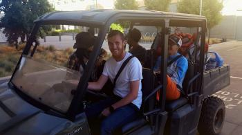

|  |
Matt joined VICE lab as a junior specialist in the fall of 2016. He graduated from California State University, Stanislaus in May 2016 with a B.S. in geology. His prior research experience includes collection of geophysical data in the Sacramento-San Joaquin River Delta and conducting GIS analyses to assist paleontological research in California’s Central Valley. He currently supports the study of Northeast Delta restoration benefits through the development of novel high resolution water quality and bathymetric mapping methods and assisting in field data collection. Matt’s research interests are in understanding surficial processes through geospatial technologies and how this information may be used to benefit water management and conservation in a changing climate. |
|---|